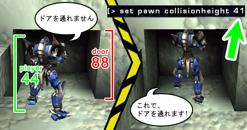
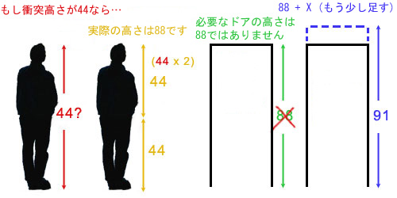

UDN
Search public documentation:
ActorVariablesJP
English Translation
한국어
Interested in the Unreal Engine?
Visit the Unreal Technology site.
Looking for jobs and company info?
Check out the Epic games site.
Questions about support via UDN?
Contact the UDN Staff
한국어
Interested in the Unreal Engine?
Visit the Unreal Technology site.
Looking for jobs and company info?
Check out the Epic games site.
Questions about support via UDN?
Contact the UDN Staff
アクタ変数
本書の概要: アクタ プロパティの総合的ガイド。 本書の変更記録: 最終更新日は2004年11月25日。更新者は Michiel Hendriks、v3323用に変更。前回変更は2003年11月3日、Chris Linder (Main.DemiurgeStudios)が衝突セクションを差し替え。原文著者－Tom Lin (Main.DemiurgeStudios)。はじめに
本書はアクタの [Properties] (プロパティ) セクションに含まれるすべての値を記載しています。本リストには、各項目のデフォルト値も記載されています。UDN上にある関連文書へのリンクも掲載されています。この情報のほとんどは別のページにすでに記載されているため、その場所へのリンク付索引としても充分に活用できます。詳細
| 変数 | 説明 | デフォルト |
|---|---|---|
| bCanTeleport | True に設定すると、このアクタはExampleMapsTeleporters (テレポータ アクタ) と共にテレポートできます。 | False |
| bCollideWhenPlacing | True に設定されると、アクタが UnrealEd に配置されるときと、ランタイムでスポーンされるときに、ワールドと衝突します。この変数が True の場合、アクタを他のものと衝突しない位置に配置しなければ、スポーンすることはできません。 | False |
| bDirectional | True に設定された場合、矢印を使って編集を行っているとき、方向指示矢印を表示します。 | False |
| bEdShouldSnap | True に設定した場合、アクタをエディタ内のグリッドにスナップします。 | False |
| bGameRelevant | この変数はデフォルトのままにしておいてください。 | |
| bHidden | ランタイム時にアクタを非表示にします。テスト中には表示したいが最終的には非表示にしたい、トリガのような値をトグルするのに適しています。 | False |
| bHiddenEd | True に設定した場合、編集中はアクタが非表示になります。そのアクタを再び選択したい場合は、[Search Actors] (アクタを検索) ボタンを使用してください。 | False |
| bHiddenEdGroup | True に設定した場合、エディタ内でアクタが非表示になります。 グループ ブラウザを使用して表示状態に戻すことができます。 | False |
| bHighDetail | default.ini 内の HighDetailActors が 有効 に設定されているときに、この変数を 有効 に設定すると、アクタはランタイムでのみ表示されます。 | False |
| bLockLocation | True に設定されている場合、エディタ内でそのアクタを移動することができなくなります。 | False |
| bMovable | True に設定した場合、ランタイム時にこのアクタを移動できます。 | True |
| bNoDelete | この変数はデフォルトのままにしておいてください。 | False |
| bShouldBaseAtStartup | この変数が 有効 、bCollideWorld が 有効 、Physics が PHYS_None または PHYS_Rotating に等しい場合、アクタはその下にあるものが何であれ、それをベースにします。アクタの「ベース」とは、アクタが添付される対象です。アクタの位置は、新しく設定された「ベース」の位置に対し常に一定となります。たとえば、移動可能なライトにおいてこの変数を True に設定すると、ムーバー上にライトを配置することができます。ムーバーがレベル内で移動すると、ライトもそれと共に移動します。 | False |
| bStasis | この変数はデフォルトのままにしておいてください。 | False |
| bSuperHighDetail | default.ini ファイル内の SuperHighDetailActors が 有効 に設定されているときに、この変数も 有効 に設定すると、アクタはランタイム時にのみ表示されます。 | False |
| Lifespan | アクタが削除されるまでにワールド内にとどまる秒数。ゼロの場合、オブジェクトは無限の寿命を持つとみなされます。 | 0 |
衝突
衝突は、非常に扱いにくいトピックで、相互関係を持つ変数が多くあります。衝突セクションには数多くの変数があるだけでなく、エンジン内の他の場所にも、衝突に影響を及ぼす変数(たとえば静的メッシュブラウザ)があります。さらに事情を複雑にする要因は、オブジェクトの衝突プロパティが、 UnrealEd で設定した変数セットを無効にするコードで設定されることが時々あることです。そのため、以下の定義を絶対とせず、あくまでもガイドとしてご使用ください。 静的メッシュの場合、衝突の注意事項とニュアンスは詳細に解説されています。詳細は、StaticMeshCollisionReference (静的メッシュ衝突リファレンス) を参照してください。| 変数 | 説明 |
|---|---|
| bAutoAlignToTerrain | この変数が 有効 に設定されていると、アクタはテレインにロックされます。また、テレインエディタの使用時に、アクタがテレインに添付および整列された状態が維持されます。 |
| bBlockActors | この変数が 無効 の場合、非プレーヤのアクタがこのオブジェクトを貫通して移動することができます。この変数が 有効 で、 bBlockNonZeroExtentTraces と bCollideWorld の両方とも 有効 の場合、オブジェクトは非プレーヤアクタをブロックします。 |
| bBlockKarma | bBlockKarma が 無効 の場合、オブジェクトは Karma オブジェクトをブロックしません。この bBlockKarma が 有効 で、 bCollideWorld も 有効 の場合、このオブジェクトは Karma アクタに衝突します。 |
| bBlockNonZeroExtentTraces | この変数が 無効 の場合、このオブジェクトは非ゼロ エクステント トレースをブロックしません。非ゼロ エクステント トレースは、プレーヤの移動やその他ほとんどのアクタの移動などに使用されます。この変数が=有効=で、 bCollideWorld も 有効 の場合、このオブジェクトは非ゼロ エクステント トレースをブロックします。 |
| bBlockPlayers | この変数が 無効 の場合、プレーヤ アクタはこのオブジェクトを貫通して移動できます。この変数が 有効 で、 bBlockNonZeroExtentTraces と bCollideWorld の両方が 有効 の場合、オブジェクトはプレーヤアクタをブロックします。 |
| bbBlockZeroExtentTraces | この変数が 無効 の場合、このオブジェクトはゼロ エクステント トレースをブロックしません。ゼロ エクステント トレースは、インスタントヒット武器とロケット弾などの武器の両方を含む、弾道に使用されます。この変数が 有効 で、 bCollideWorld も 有効 の場合、このオブジェクトはゼロ エクステント トレースをブロックします。 |
| bCollideActors | 最も重要な衝突変数です。 bCollideActors 変数が 無効 の場合、このアクタは何にも衝突せず、何をブロックすることもありません。これは、アクタが衝突ハッシュに入っていないためです。 有効 の場合、このアクタはほかのアクタと「衝突」します。「衝突」とは、エンジンが2つのオブジェクトの接触している状態を計算するという意味でしかありません。たとえば、_トリガ_ではこの変数を 有効 に設定します。これは、プレーヤがトリガに触れているが、トリガからブロックされていないことをエンジンに知らせる必要があるためです。このアクタが他のアクタをブロックするように設定したい場合、 bCollideActors を 有効 に設定すると共に、ブロックする対象次第で、このセクションに記載されている他の変数も設定する必要があります。 |
| bCollideWorld | アクタがワールドと衝突するかどうかを定義します。ワールドからアクタが落ちてしまうことを防ぎたい場合、 bCollideWorld を必ず 有効 に設定してください。 |
| bPathColliding | bBlockActors と bCollideActors が 有効 で、 bStatic が 無効 のときに、 bPathColliding を 無効 に設定すると、このアクタはパスビルディング中に衝突しません。つまり、AI は、実際には貫通できなくても、このアクタを貫通できると考えます。 AI がアクタを貫通することができれば、 bPathColliding を 有効 に設定しても、AI がアクタ内を貫通するパスを見つけることを防止できません。この設定は、AI がアクタを貫通しようとしているときに、邪魔にならないようにその場を移動するムーバーまたは他のアクタに利用できます。 |
| bProjTarget | この変数が 無効 の場合、弾道はこのオブジェクトを貫通できます。これは、インスタントヒット武器とロケット弾などの武器の両方に当てはまります。 bProjTarget が 有効 で、 bBlockZeroExtentTraces と bCollideWorld が両方とも=有効=の場合、アクタは弾道をブロックします。 |
| bUseCylinderCollision | これが 有効 の場合、Karma 衝突を除くすべての衝突について、エンジンはシリンダ衝突 (CollisionRadius と CollisionHeight によって定義される) を使用します。 bUseCylinderCollision が 無効 のときに、このアクタを衝突させるには、これ以外の衝突の種類に依存する必要があります。方法としては、トライアングル別の静的メッシュ衝突などがあります。 |
| CollisionHeight | この値は、アクタ全体の高さの半分です。 |
| CollisionRadius | この値は、シリンダ衝突ボリュームの半径を設定します。 |
衝突高さとドア高さの比較
CollisionHeight (上記参照) は、変わった変数です。フィールドに入力する高さは、実際にアクタが入れる高さではありません。アクタが入れるのはアクタのちょうど半分の高さです。ただし、これは必ずしもアクタが、その高さとまったく同じ高さのドアに入れると意味ではありません。アクタの高さが44で、高さが88のドアがある場合、次のような問題が生じることもあります。
そのため、レベルの作成時にアクタの実際の衝突サイズを予測する際は、CollisionHeight (衝突高さ) を2倍にしたものに少し割り増すようにします。
表示
| 変数 | 説明 | デフォルト |
|---|---|---|
| AmbientGlow | アクタが表示される明るさの範囲を0～255のスケールで定義します。例は、「サーフェスの照明」 を参照してください。 | 0 |
| AntiPortal | このフィールドはデフォルトのままにしておいてください。 | None |
| bAcceptsProjectors | この変数は、プロジェクタがアクタに影響を及ぼすかどうかを定義します。 | True |
| bAlwaysFaceCamera | スプライトのような、常にカメラに面してレンダリングされるアクタ。頂点メッシュのみに使用。 | False |
| bDeferRendering | DrawType が DT_Particle または、Style が STY_Additive の場合、レンダリングを遅延させます。 | True |
| bDisableSorting | 有効 に設定した場合、エンジンは (たとえば、アルファチャンネル トライアングルに関して) アクタ トライアングルをソートしません。 | False |
| bShadowCast | アクタが静的シャドウ (たとえば、SunLight アクタによって生じるシャドウ) を落とすかどうかを定義します。 | False |
| bStaticLighting | この変数が 有効 の場合、エンジンは前もって計算されたライティングをそのアクタに対して使用します。アクタが動いたとしても、アクタに対するライティングは変わりません。通常、この値をデフォルト値のままにしておくことが最適です。 | False |
| bUnlit | この変数を 有効 に設定した場合、ライトはアクタに影響を及ぼさず、その最大の明るさで表示されます。 | False |
| bUseDynamicLights | 有効 に設定した場合、アクタはダイナミックライトにより照明されます。アクタは静的ライトとダイナミックライトの両方を同時に受けることが可能です。 | True_ |
| bUseLightingFromBase | これは、アクタの添付先の Unlit/AmbientGlow 値を引き出し、それをアクタ自体に適用します。 | False |
| CullDistance | この変数は、アクタがカリングされるタイミングを定義します。この値が0の場合、カリングの距離はなしになります。この値が0より大きい場合、値の距離でカリングされます。マイナスの値は使用できないようです。 | 0 |
| DrawScale | アクタサイズを制御します。 | 1.0 |
| DrawScale3D | この変数は、アクタを非均一にスケールするために使用されます。 | (1.0, 1.0, 1.0) |
| DrawType | この値は、エンジンが使用する描画効果を示します。この値を変更するべきではありません。実際に、値を変更するとエディタウィンドウがクラッシュする場合があります。 | varies with actor |
| ForcedVisibilityZoneTag | この変数は、ビジビリティ コードに対し、アクタが所与のタグのゾーン内に存在するかのように、アクタを処理するよう命じます。 | None |
| LODBias | 使用されている LOD をスケールするために骨格および頂点アニメーション メッシュによって使用されます。これは、使用されるLODの乗数です。メッシュが LOD レベル 2 を使用したいときに、LODBias が 2.0 なら、LOD レベル 4 を使用することになります。詳細は、AnimBrowserReference (アニメーション ブラウザ リファレンスの LOD セクション)を参照してください。 | 1.0 |
| MaxLights | このアクタに影響を与えることができるダイナミック ライトの最大値。 | 4 |
| Mesh | この変数を使用すると、アクタのかわりに、骨格または頂点アニメーション メッシュを使用できます。これを使用する場合は、必ず_描画タイプ_ を DT_Mesh に変更してください。 | None |
| OverlayMaterial | スキンで使用するシェーダ/マテリアル効果 (骨格メッシュ専用) | None |
| PrePivot | これらの値を使用すると、所与のピボットポイントからアクタをオフセットできます。 | (0.0, 0.0, 0.0) |
| ScaleGlow | 静的メッシュとコロナの明るさを変えることができます。変更内容を適用するには、ライティングをリビルドしてください。 | 1.0 |
| Skins | この設定で、メッシュにテクスチャを再割り当てできます。詳細については、「ワークフロー技術とモジュール方式を使用する」 を参照してください。 | ... |
| StaticMesh | この変数では、アクタの StaticMesh (静的メッシュ) を置換できます。これは、エミッタなど、すべてのアクタに有効であるわけではありません。使用する場合は、必ず DrawType を DT_StaticMesh に設定してください。 | None |
| Style | スプライトとメッシュ用のレンダリング スタイルです。この値は、通常、デフォルト設定のままにしておくことが最適です。 | STY Normal |
| Texture | どのテクスチャがスプライトアクタを表示するかを制御します。 | varies with actor |
| UV2Mode | UV2Texture のレンダリング モード | UVM MacroTexture |
| UV2Texture | アクタのスキンに追加される、追加のオーバレイ (静的メッシュ専用) | None |
イベント
| 変数 | 説明 | デフォルト |
|---|---|---|
| Event | このアクタがアクティブ化またはトリガされたときに、発生するイベント。 | None |
| ExcludeTag[8] | 多目的の除外タグ。ライト、プロジェクタの除外、アクタのレンダリング、天候のブロックに使用されます。たとえば、 bSpecialLit のあるアクタについて、ダイナミックライトがアクタに影響を及ぼしているかどうかチェックするために使用されます。 | |
| Tag | アクタのタグ。 | None |
Force
| 変数 | 説明 | デフォルト |
|---|---|---|
| ForceNoise | ForceScale に追加されるノイズの量。 0 = ノイズなし、 1 = 最大ノイズ。 | 0 |
| ForceRadius | パーティクルがアクタの中を通るときに、このアクタが効果を及ぼすパーティクルの半径。 | 0 |
| ForceScale | このアクタがパーティクルに及ぼす効果のスケール。 | 0 |
| ForceType | このアクタがパーティクルに及ぼす力の種類。 FT_None は、このアクタがパーティクル システムに効果を与えないことを意味します。 FT_DragAlong は、アクタの中を通ると、パーティクルがアクタの後ろにわずかに引っ張られる効果を及ぼします。この効果は、UT2K3 においてロケットの尾として使用されていました。＠＠ | None |
Karma
| KParams | 説明については、KarmaReference（Karmaリファレンス）を参照して下さい。 |
|---|
ライトのカラー
カラー選択ツールを使用してこれらの値を設定することができます。または Photoshop 内でいろいろ試した後、そこで見つけた色相、彩度、明るさ(H S B)設定を使用することもできます。| 変数 | 説明 | デフォルト |
|---|---|---|
| LightBrightness | ライトによって生じる明度を制御します。 | 0.0 |
| LightHue | ライトの発する色相を制御します。 | 0 |
| LightSaturation | ライトの発する彩度レベルを制御します。 | 0 |
ライティング
| 変数 | 説明 | デフォルト |
|---|---|---|
| bActorShadows | 有効 の場合、アクタは影を落とします。 | 無効 |
| bAttenByLife | ライフスパンを減少させることによってライトを減衰させます。 | 無効 |
| bCorona | ライトは、 Skins (スキン) をコロナとして使用します。 | 無効 |
| bDirectionalCorona | bCorona が 有効 の場合、コロナが正面にあるときにコロナを拡大します。90度以上の角度の場合、ゼロにします。 | 無効 |
| bDynamicLight | 有効 に設定した場合、このライトが発する光を、ライトと共に動かすことができます。 DynamicLight は、通常のライトよりも、多少大きな負担をプロセッサにかける点にご注意ください。 | 無効 |
| bLightingVisibility | ラインチェックを使用してアクタのライティング ビジビリティを計算します。 | 有効 |
| bSpecialLit | 説明については、「ライティングのリファレンス」 を参照してください。 | 無効 |
| LightCone | 説明については、「ライティングのリファレンス」を参照してください。 | 0 |
| LightEffect | 説明については、「ライティングのリファレンス」を参照してください。 | LE None |
| LightPeriod | 説明については、「ライティングのリファレンス」 を参照してください。 | 0 |
| LightPhase | 説明については、「ライティングのリファレンス」書を参照してください。 | 0 |
| LightRadius | これは、実際のライト半径の乗数です。 | 0.0 |
| LightType | 説明については、「ライティングのリファレンス」 を参照してください。 | LT None |
動作
| 変数 | 説明 | デフォルト |
|---|---|---|
| AttachTag | このフィールドを使用すると、アクタと一緒に動かす別のアクタの Tag を入力できます。移動できるアクタ (エミッタ、ムーバー、または可動ライト) でのみ機能することにご注意ください。 | None |
| bBounce | このフィールドは、動いているアクタがオブジェクトに当たったときに跳ね返るようにします。この変数は複雑なカルマ物理を処理しませんが、基本的なバウンシングを処理します。 | 無効 |
| bFixedRotationDir | この変数は回転の方向を常に同じ方向に修正します。たとえば、右回りのX軸中心での回転などです。 | 無効 |
| bHardAttach | アクタの回転と位置を修正します。この値が 無効 の場合、アクタは添付された対象に従って移動しますが、一緒に回転しません。 bBlockActor と bBlockPlayer も 無効 である必要があります。 | 無効 |
| bIgnoreEncroachers | この変数を有効に設定すると、ムーバーとアクタの間の衝突をエンジンが検知しないようになります。さらに、身をかわした、ジャンプしたなどの状態の追跡やチェックを含む、その他のさまざまな衝突検出が実行されません。 | 無効 |
| bIgnoreTerminalVelocity | PHYS_Falling において、 PhysicsVolume (物理ボリューム) の TerminalVelocity (終端速度) を無視します。 有効 の場合、アクタは加速を続けます。 | 無効 |
| bOrientToVelocity | 現在の速度の方向にアクタを回転します。 | 無効 |
| bRotateToDesired | アクタを DesiredRotation に回転します。(下記を参照) | 無効 |
| Buoyancy | アクタの水中浮力 (たとえば、WaterVolume の中)。 | 0.0 |
| DesiredRotation | bRotateToDesired において目標とされるターゲット回転位置。 | (0, 0, 0) |
| Location | アクタの場所。 | (0.0, 0.0, 0.0) |
| Mass | アクタの質量。液体サーフェス上に浮かんでいるとき、この変数は、 PHYS_Swimming 、 PHYS_Falling 、および PHYS_Hovering の速度に影響を及ぼします。また、ムーバーなど、その他のさまざまなものにも使用されます。 | 100.0 |
| Physics | アクタの現在の物理モード。さまざまな物理タイプについては、SetPhysics (理の設定) を参照してください。 | PHYS None |
| Rotation | このアクタの回転。 | (0, 0, 0) |
| RotationRate | 秒あたりの回転の変化。 | (0, 0, 0) |
| Velocity | ランタイム中にアクタが移動する速度。 | (0.0, 0.0, 0.0) |
オブジェクト
| 変数 | 説明 | デフォルト |
|---|---|---|
| Group | グループ ブラウザ内でアクタに割り当てられたグループを示します。アクタは同時に複数のグループに属することができます。 | None |
| InitialState | すべてのアクタに適用できるわけではありません。ムーバー などの一部のアクタのみ、このフィールドを使用します。 | None |
| Name | Unreal Ed がアクタに割り当てる名前です。このフィールドは 変更できません 。また、 Tag フィールドと 同じではありません 。 | None |
サウンド
| 変数 | 説明 | デフォルト |
|---|---|---|
| AmbientSound | 説明については、ExampleMapsSounds (サウンドのマップ例) を参照してください。 | None |
| bFullVolume | 説明については、ExampleMapsSounds (サウンドのマップ例) を参照してください。 | 無効 |
| SoundOcclusion | 説明については、ExampleMapsSounds (サウンドのマップ例) を参照してください。 | OCCLUSION Default |
| SoundPitch | 説明については、ExampleMapsSounds (サウンドのマップ例) を参照してください。 | 64 |
| SoundRadius | 説明については、ExampleMapsSounds (サウンドのマップ例) を参照してください。 | 64.0 |
| SoundVolume | 説明については、ExampleMapsSounds (サウンドのマップ例) を参照してください。 | 128 |
| TransientSoundRadius | 説明については、ExampleMapsSounds (サウンドのマップ例) を参照してください。 | 300.0 |
| TransientSoundVolume | 説明については、ExampleMapsSounds (サウンドのマップ例)を参照してください。 | 0.3 |